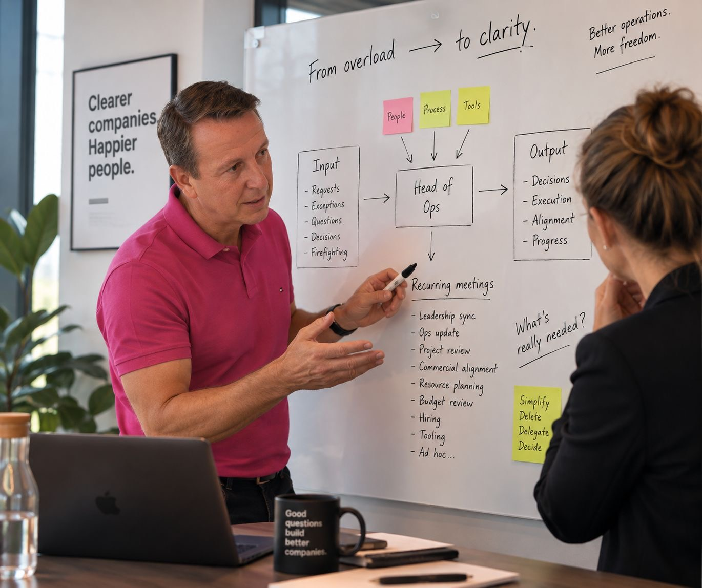
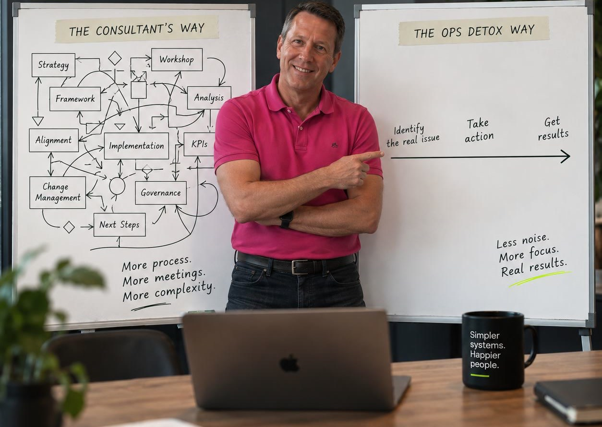

“We finally saw which meetings, reports and approval steps were slowing the company down, and what to remove first.”
WORK WITH US
Operational detox for scale-ups
Give your leadership team a third of its week back.
We help scale-up founders run a faster, leaner company by cleansing its operations of everything growth left behind, together with their team.

Nobody designed it this way. It simply accumulated.
- 01
Every decision queues on one desk. An €800 approval waits four days because the founder is travelling.
- 02
The calendar is full and the week produces little. Meetings end in another meeting, rarely in a decision.
- 03
Your best people spend their evenings formatting reports nobody opens.
- 04
Nine tools, and none of them speak to each other.
- 05
The truth reaches you late and polished. What people really thought, you hear in the exit interview.
- 06
You hired to relieve the pressure. Within a month, the new people sat in the same meetings.
Left as it is, it costs your leadership a third of every week, and your company the speed that made it successful.
OPS Detox™
There is a cleaner way to run a growing company.
OPS Detox™ is a modular system for the real bottlenecks in how work flows. Each module stands alone; together, they reset how the company runs.
We measure where your time, decisions and truth actually go. Then we strip out what no longer serves the business and rebuild the structure together with your team, so it holds long after we have left.

Testimonials
What leaders say
Operational flow
For founders whose company has become meeting-heavy, buried in reports and dependent on their approval. We strip the operating rhythm back to what earns its place, so work and decisions no longer route through one desk.
Meetings Detox
Win back your execution time.
Decision Detox
Weeks become hours.
Reporting Detox
Reports that create decisions.
Organisational flow
For teams where delegation, accountability and information no longer keep pace with growth. We rebuild how information moves, who owns what and how early the truth is spoken, so the company holds its shape when you step back.
Communication Detox
Information without rework.
Ownership Detox
Close the ownership vacuum.
Psychological Safety Detox
Say the expensive thing out loud.
Tool Stack Detox
If you have too many tools doing the same thing, used in different ways, with no clear ownership. The OPS Detox Tool Stack Module removes tool overload and restores clarity.